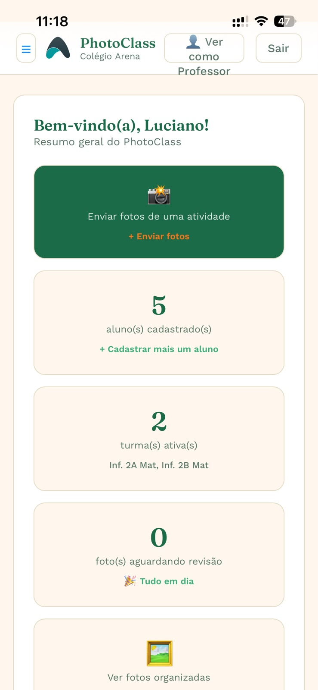
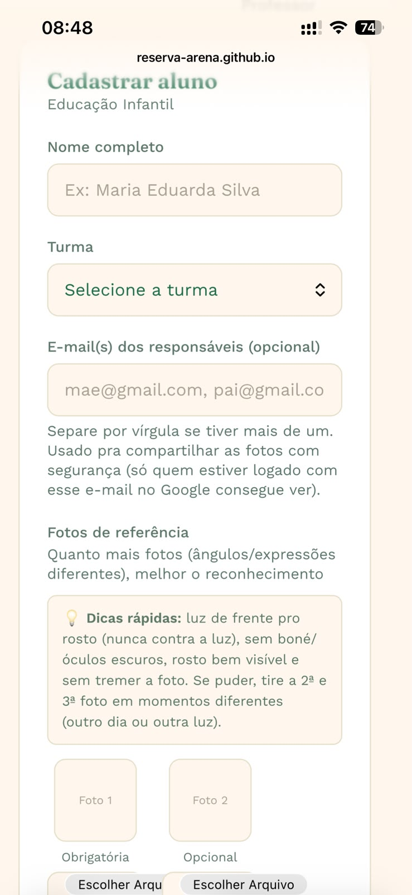
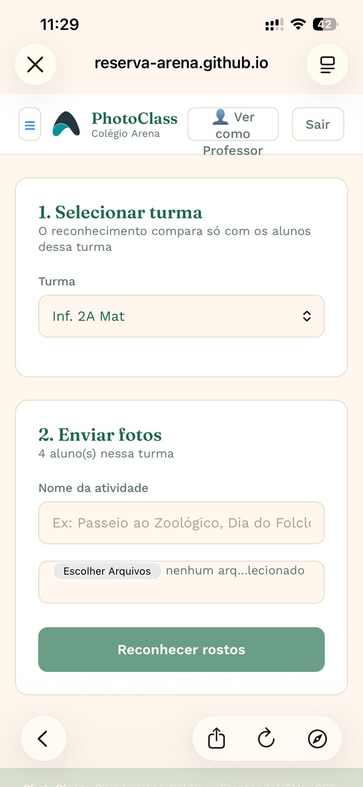
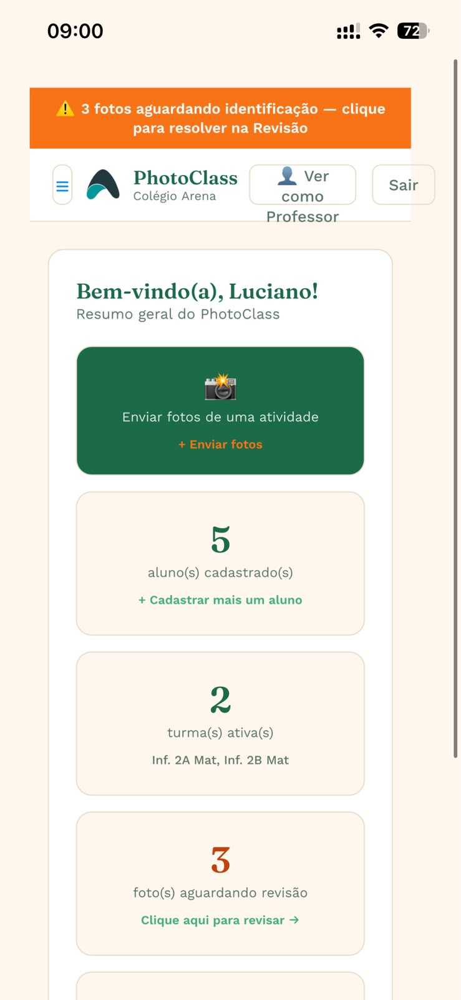
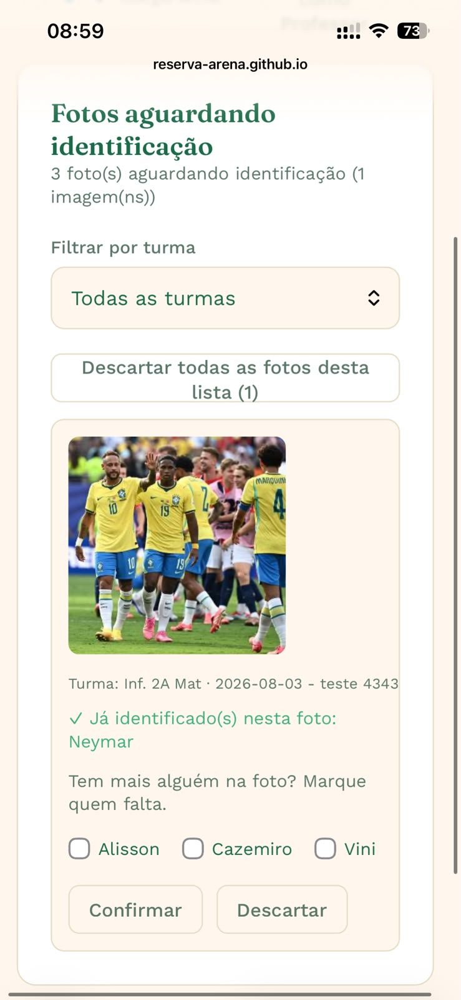
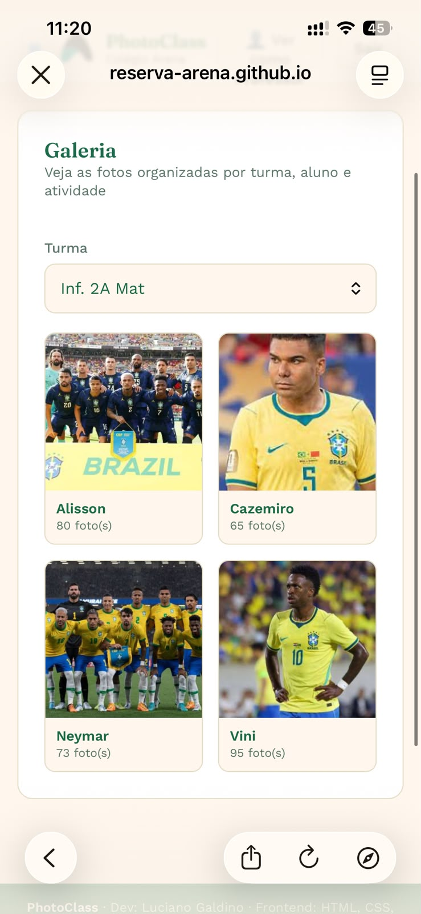
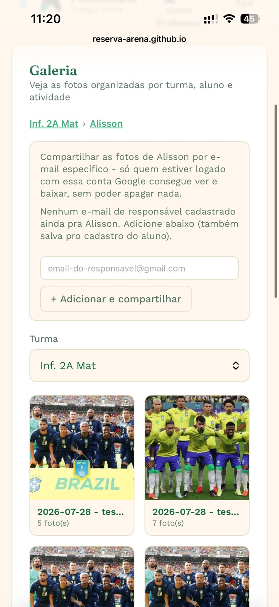

Guia rápido
Como usar o PhotoClass no dia a dia - do login até organizar as fotos por aluno
1. Como entrar
- Acesse reserva-arena.github.io/photoclass no navegador do celular ou computador.
- Faça login com seu e-mail e senha (a senha você criou pelo link que recebeu por e-mail).

Painel: atalhos rápidos e resumo de alunos, turmas e pendências
2. Cadastrar um aluno
Só precisa fazer isso uma vez por aluno (na primeira vez que ele for fotografado)
- No menu, toque em "Alunos".
- Preencha o nome completo e escolha a turma.
- Envie de 1 a 3 fotos de referência do aluno (a primeira é obrigatória).
- Toque em "Cadastrar aluno".

Tela de cadastro de aluno
3. Enviar fotos de uma atividade
- No menu, toque em "Fotos".
- Selecione a turma.
- Escreva o nome da atividade (ex: "Passeio ao Zoológico", "Dia do Folclore").
- Toque em "Escolher Ficheiros" e selecione as fotos (pode escolher várias de uma vez).
- Toque em "Reconhecer rostos" e aguarde o processamento.
- Confira o resultado: quem já foi reconhecido automático aparece com ✓ verde - não precisa fazer nada. Quem não foi reconhecido aparece numa lista para você marcar manualmente quem é.
- Toque em "Salvar fotos confirmadas" para enviar tudo pro Google Drive.

Tela de envio de fotos
4. Revisão
Se aparecer um aviso laranja no topo de qualquer tela (como no Painel abaixo), é um lembrete de que tem foto(s) esperando identificação. Toque nele, ou toque em "Revisão" no menu, pra resolver.

O aviso laranja aparece em qualquer tela quando há pendências
Na tela de Revisão, marque quem aparece em cada foto e toque em "Confirmar" (ou "Descartar", se não for de nenhum aluno da turma).

Tela de Revisão: marque quem falta identificar em cada foto
5. Galeria
Pra ver as fotos já organizadas: Turma → Aluno → Atividade → Fotos. Toque em "Galeria" no menu. Cada foto pode ser ampliada com um toque, e também tem um link para abrir a foto ou a pasta original direto no Google Drive.

Galeria: cada aluno da turma, com a quantidade de fotos já organizadas

Dentro de um aluno: fotos por atividade, e a opção de compartilhar
Dúvidas ou problemas?
Fale com Luciano Galdino - WhatsApp: (62) 98497-9797